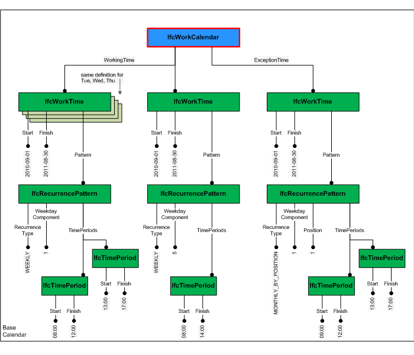

5.3.3.8 IfcWorkCalendar
| Calendrier de travail |
| Arbeitskalender |
An IfcWorkCalendar defines working and non-working time periods for tasks and resources. It enables to define both specific time periods, such as from 7:00 till 12:00 on 25th August 2009, as well as repetitive time periods based on frequently used recurrence patterns, such as each Monday from 7:00 till 12:00 between 1st March 2009 and 31st December 2009.
HISTORY New entity in IFC4.
A work calendar is a subtype of IfcControl and thus inherits the feature for controlling other objects through IfcRelAssignsToControl, which is used to define a work calendar for tasks (IfcTask) and resources (IfcResource). It also inherits a name and description attribute, whereas a name shall be given and a description may be given as an indication of its content and usage.
The definition of time periods can be derived from a base calendar and/or modified/defined by a set of working times and non-working exception times. All time periods defined by IfcWorkCalendar.ExceptionTimes override the time periods inherited from the base calendar (base calendar is defined as the next applicable calendar for the task or resource). Thus, exception times replace the working times from the base calendar.
Figure 108 shows the definition of a work calendar, which is defined by a set of work times and exception times. The work times are defined as recurring patterns with optional boundaries (applying from and/or to a specific date). The shown example defines a simple work calendar with working times Monday to Thursday 8:00 to 12:00 and 13:00 to 17:00, Friday 8:00 to 14:00 and as exception every 1st Monday in a month the work starts one hour later - i.e. the working time on every 1st Monday in a month is overriden to be 9:00 to 12:00 and 13:00 to 17:00. Both the working time and the exception time is valid for the period of 01.09.2010 till 30.08.2011.
 |
Figure 108 — Work calendar instantiation |
Common Use Definitions
The following concepts are inherited at supertypes:
 Instance diagram
Instance diagram
Control Assignment
The Control Assignment concept applies to this entity.
The base calendar of a work calendar is defined by IfcRelAssignsToControl, where IfcRelAssignsToControl.RelatingControl is linked with the base calendar and IfcRelAssignsToControl.RelatedObjects is linked with work calendars that are derived from the base calendar. Although not restricted by the IfcRelAssignsToControl relationship it is only allowed to have one base calendar.
XSD Specification:
<xs:element name="IfcWorkCalendar" type="ifc:IfcWorkCalendar" substitutionGroup="ifc:IfcControl" nillable="true"/>
<xs:complexType name="IfcWorkCalendar">
<xs:complexContent>
<xs:extension base="ifc:IfcControl">
<xs:sequence>
<xs:element name="WorkingTimes" nillable="true" minOccurs="0">
<xs:complexType>
<xs:sequence>
<xs:element ref="ifc:IfcWorkTime" maxOccurs="unbounded"/>
</xs:sequence>
<xs:attribute ref="ifc:itemType" fixed="ifc:IfcWorkTime"/>
<xs:attribute ref="ifc:cType" fixed="set"/>
<xs:attribute ref="ifc:arraySize" use="optional"/>
</xs:complexType>
</xs:element>
<xs:element name="ExceptionTimes" nillable="true" minOccurs="0">
<xs:complexType>
<xs:sequence>
<xs:element ref="ifc:IfcWorkTime" maxOccurs="unbounded"/>
</xs:sequence>
<xs:attribute ref="ifc:itemType" fixed="ifc:IfcWorkTime"/>
<xs:attribute ref="ifc:cType" fixed="set"/>
<xs:attribute ref="ifc:arraySize" use="optional"/>
</xs:complexType>
</xs:element>
</xs:sequence>
<xs:attribute name="PredefinedType" type="ifc:IfcWorkCalendarTypeEnum" use="optional"/>
</xs:extension>
</xs:complexContent>
</xs:complexType>
EXPRESS Specification:
|
|
| CorrectPredefinedType | : | NOT(EXISTS(PredefinedType)) OR (PredefinedType <> IfcWorkCalendarTypeEnum.USERDEFINED) OR
((PredefinedType = IfcWorkCalendarTypeEnum.USERDEFINED) AND EXISTS(SELF\IfcObject.ObjectType)); |
|
EXPRESS-G diagram
Attribute Definitions:
| WorkingTimes | : |
Set of times periods that are regarded as an initial set-up
of working times. Exception times can then further restrict
these working times.
|
| ExceptionTimes | : |
Set of times periods that define exceptions (non-working
times) for the given working times including the base
calendar, if provided.
|
| PredefinedType | : |
Identifies the predefined types of a work calendar from which
the type required may be set.
IFC4 CHANGE Attribute added
|
Formal Propositions:
| CorrectPredefinedType | : | The attribute ObjectType must be asserted when the value of the IfcWorkCalendarTypeEnum is set to USERDEFINED. |
Inheritance Graph:
 Link to this page
Link to this page